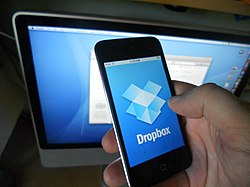
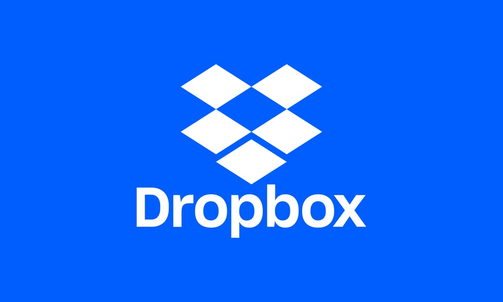

Funcionalidad
Si bien Dropbox funciona como un servicio de almacenamiento, se centra en sincronizar y compartir archivos, y con un sistema que también permite hacerlo mediante usb. Además, posee soporte para historial de revisiones, de forma que los archivos borrados de la carpeta de Dropbox pueden ser recuperados desde cualquiera de los dispositivos sincronizados. Guarda hasta las últimas 4 versiones de cada fichero, por lo que no solo permite recuperar archivos borrados, sino versiones anteriores de un archivo que hayamos modificado. También existe la funcionalidad de conocer la historia de un archivo en el que se esté trabajando, permitiendo que una persona pueda editar y cargar los archivos sin peligro de que se pierdan las versiones previas. El historial de los archivos está limitado a un período de ""30 días"", aunque existe una versión de pago que ofrece el historial "ilimitado".
El historial utiliza la tecnología de delta encoding. Para ahorrar ancho de banda y tiempo, si un archivo en una carpeta Dropbox de un usuario se modifica, Dropbox solo carga las partes del archivo que han sido cambiadas cuando se sincroniza. Si bien el cliente de escritorio no tiene restricciones para el tamaño de los archivos, los archivos cargados por medio de la página Web están limitados a un máximo de 20 GB cada uno. Dropbox utiliza el sistema de almacenamiento S3 de Amazon para guardar los archivos y SoftLayer Technologies para su infraestructura de apoyo.
Cuentas
EaseUS Data Recovery Wizard es un programa chino de recuperación de datos que utiliza una interfaz de usuario Wizard (software) para guiar a los usuarios a través del proceso de recuperación de datos. Existen versiones gratuitas y de pago del software tanto en Windows como en macOS .
La versión gratuita busca e identifica datos recuperables, pero no recupera ningún archivo hasta que se compra una licencia. Realiza un "Escaneo rápido" que produce un recuento de archivos y un recuento de datos de "Archivos eliminados" (generalmente pequeños) y un "Escaneo avanzado" que proporciona los recuentos de archivos / datos para "Archivos perdidos" y "Archivos existentes". El botón "Recuperar" en la parte inferior derecha se resalta cuando se completa el escaneo, pero al hacer clic en él, el usuario debe pagar por una actualización.
Seguridad
Dropbox se anuncia diciendo que ni siquiera los empleados tienen acceso a los datos guardados. Se ha demostrado varias veces que esto no es verdad ya que el hecho de que los datos se puedan ver duplicados es incompatible con que no tengan acceso. Además, el 20 de junio de 2011, se pudo comprobar durante 4 horas que se podía acceder a cualquier cuenta, lo que permitió demostrar la falta de seguridad de Dropbox. Además de lo anterior, hay que tener en cuenta que los datos se envían a la nube, almacenándose en lugares y países indeterminados, los responsables de Dropbox no firman un contrato de prestación de servicios con quien les confía sus ficheros, pudiéndose estar incumpliendo la Ley Orgánica 15/99 de Protección de Datos de Carácter Personal que tan sólo permite almacenar los datos en territorio de la UE.
Dropbox fue señalada, entre otras compañías desarrolladoras de productos de tecnología informática de punta, como una de las involucradas dentro del programa de vigilancia electrónica de alto secreto (Top Secret) PRISM, a cargo de la Agencia de Seguridad Nacional (NSA) de los Estados Unidos, según los informes y documentos filtrados por el ex informante y empleado de la Agencia Central de Inteligencia (CIA), Edward Snowden en junio de 2013.
Palabras Sabias
 El cerebro humano es como una máquina de acuñar moneda. Si echas en ella metal impuro, obtendrás escoria; si echas oro, obtendrás moneda de ley..
El cerebro humano es como una máquina de acuñar moneda. Si echas en ella metal impuro, obtendrás escoria; si echas oro, obtendrás moneda de ley..
Santiago Ramón y Cajal